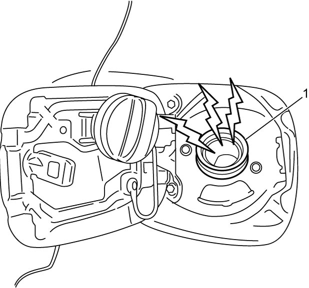
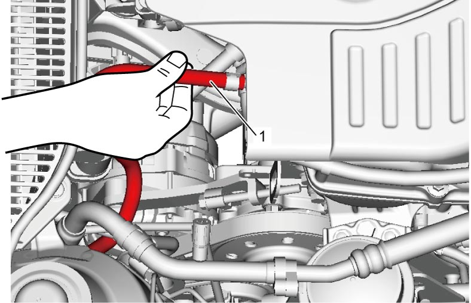

1G
| Fuel Pump On-Vehicle Inspection |
NOTE:
Fuel pressure regulator is an integral part of fuel pump assembly.
Fuel pressure regulator cannot be individually checked.
1)Remove fuel filler cap and set ignition “ON”. Fuel pump operation sound should be heard from fuel filler (1) for about 2 seconds. Reinstall fuel filler cap.
If check result is not as specified, go to Fuel Pump and Its Circuit Check:M16A.

If check result is not as specified, go to Fuel Pump and Its Circuit Check:M16A.

 "Expand image")
2)Set ignition “OFF” and leave it over 10 minutes as it is.
3)Fuel pressure should be felt at fuel feed hose (1) for about 2 seconds after setting ignition “ON”.
If fuel pressure is not felt, go to Fuel Pressure Check:M16A.
If fuel pressure is not felt, go to Fuel Pressure Check:M16A.

 "Expand image")